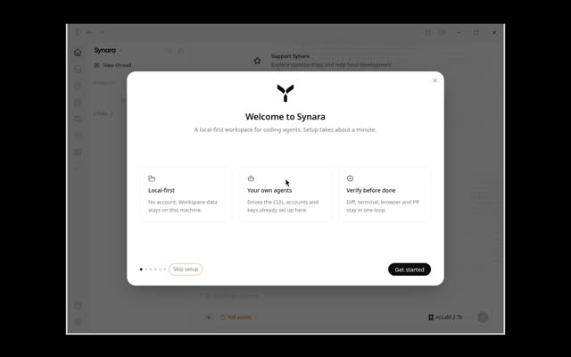

Leaderboard / #3 of 13 / Installed or launched
Synara
Developers who want a T3-style workspace with a built-in browser for verification and a provider handoff inside one task.
Weighted score79.0coverage 100%
Scores by category
Rubric breakdown
- AAgent breadthweight 155
- BIsolation and parallelismweight 154
- CReview, merge and PR flowweight 154
- DRemote, cloud and mobile reachweight 103
- EOpenness and licenseweight 105
- FMaturity and momentumweight 153
- GLinux setup friction (measured)weight 103
- HPricing and BYO modelweight 55
- IDocs and transparencyweight 54
Verdict
Strengths and weaknesses
Strengths
- 10 runtimes incl. Droid, Devin and Pi
- Agent Gateway MCP for parent and child tasks
- No account, MIT, Linux AppImage
Weaknesses
- Heavy at idle: 2.1 GB process tree
- Standalone server tarball would not install with npm
- Small team; the README itself says 'early-stage'
Evidence
What we saw and where it came from
- Hands-on (this box)
- AppImage launched on Linux/Xvfb (first window 8.4 s, 2.1 GB RSS tree). Standalone server tarball failed `npm install` (ERESOLVE, then native build error).
- Launch probe
- First window 8.37 s, process-tree RSS 2134 MB on Xvfb.
- Known issues
- README itself says 'early-stage software. APIs and interface details remain under active development.'
- Notes
- Site claims 22,045 downloads; maintainer posted 21,500+ on X (Oct 17 2026).

Sources
Feature facts
From docs, repos and our probes
- Platforms
- macOS (Apple Silicon + Intel dmg), Windows exe, Linux AppImage x86_64; separate 'Synara Remote' builds
- Supported agents
- Codex, Claude Code, Cursor, Antigravity, Grok Build, Factory Droid, OpenCode, Pi, Oh My Pi, Devin CLI
- Parallelism
- Tasks with managed Git worktrees; provider handoff inside a task; Agent Gateway lets one task spawn and wait on child tasks
- Isolation
- Git worktrees per task (optional; can use local checkout)
- Review, merge, PR
- Changes pane with diffs, checks, commits, PR creation; built-in browser for verification evidence
- Remote, cloud, mobile
- Partial: Synara Remote builds exist on GitHub releases; mobile client not verified
- MCP
- Yes: Agent Gateway (thread-scoped MCP) + scoped External MCP
- Cost visibility
- unknown
- Model choice
- Per provider/model per task
- Setup
- Install app; it detects authenticated CLIs
"unknown" means we found no source and did not guess.